OverviewA guidance system for charging robots
Automatic charging robots promise hands-free EV charging, but they need to know which socket a car has and exactly where it is, down to millimetres. AViTRoN is a compact sensing and computing device that gives them both.
A 3D depth camera and an NVIDIA Jetson Nano run YOLOv8 to detect and classify the charging port in real time inside the Robot Operating System. ROS mapping and planning bring the robot to the car, an infrared beam from the port guides the final plug-in, and once the battery is full a GSM message tells the owner.
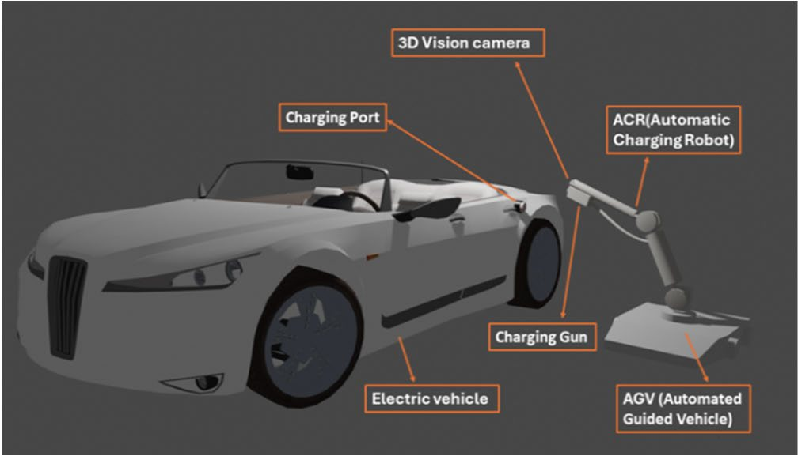
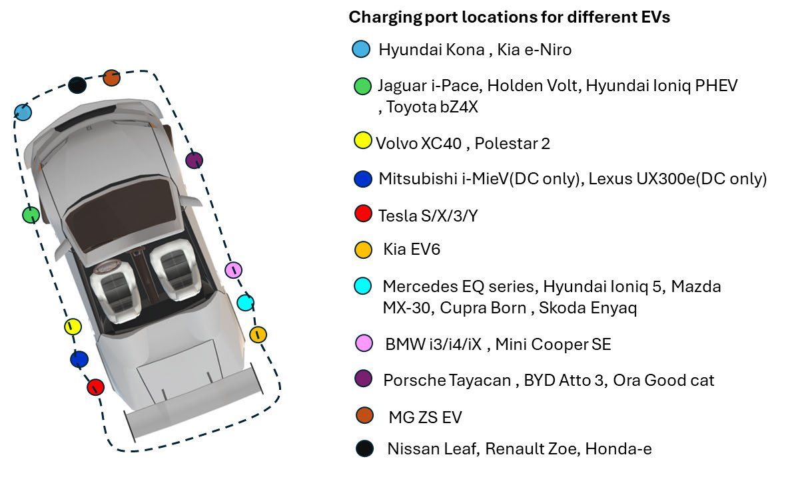
The deviceWhat AViTRoN is made of
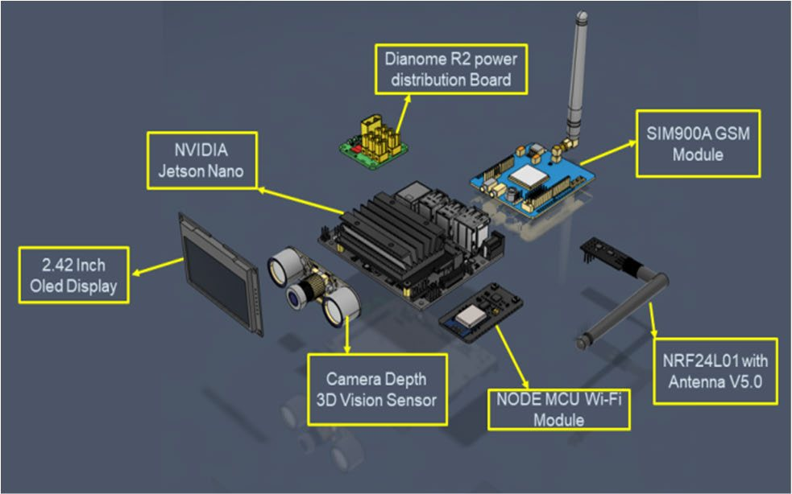
| Component | Role |
|---|---|
| NVIDIA Jetson Nano (quad-core Cortex-A57, 128-core Maxwell GPU, 4 GB) | Runs YOLOv8 and the ROS nodes |
| 3D depth vision sensor | Depth images for detection, mapping and navigation |
| IR receiver on the gun, IR transmitter on the port | Fine alignment during the final plug-in |
| SIM900A GSM module | Charge-complete SMS to the owner |
| NodeMCU ESP8266 | Uploads data to the cloud |
| NRF24L01 with antenna | Extended-range wireless link |
| 2.42-inch OLED | Shows the charging level |
| Diamond R2 power distribution board | Powers the unit |
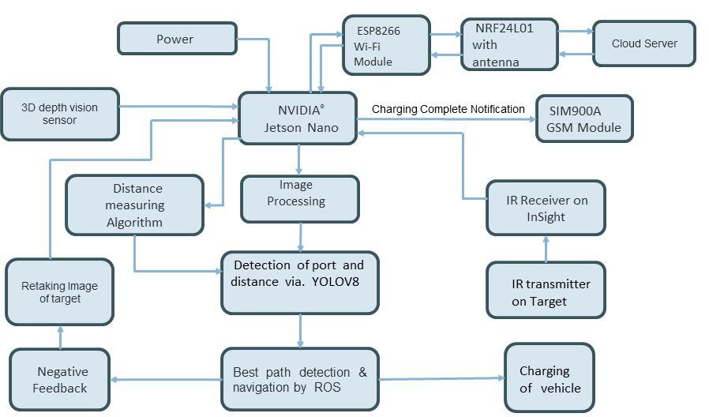
Working principleFrom image to plug-in
Acquire
The camera captures the charging area; frames are passed to the Jetson Nano.
Detect and classify
YOLOv8 predicts boxes and classes; non-maximum suppression keeps the confident port detection. If nothing matches, more images are taken.
Localise
Inside the region of interest, Hough circles find the pin features, the Kuhn-Munkres algorithm matches them, and a homography gives the camera pose relative to the port.
Navigate
SLAM with the 3D camera builds the map; global and local costmaps with A* or Dijkstra plan the route, and MoveIt plans the arm motion.
Plug in
Four steps: rapid approach to within 0.15 m; slow to 15% joint speed and lock onto the IR beam; move along the Z-axis at 2% speed; rotate, insert and confirm by IR.
Notify
State of charge is monitored and uploaded over Wi-Fi; at 100% an Arduino triggers the SIM900A to text the owner.
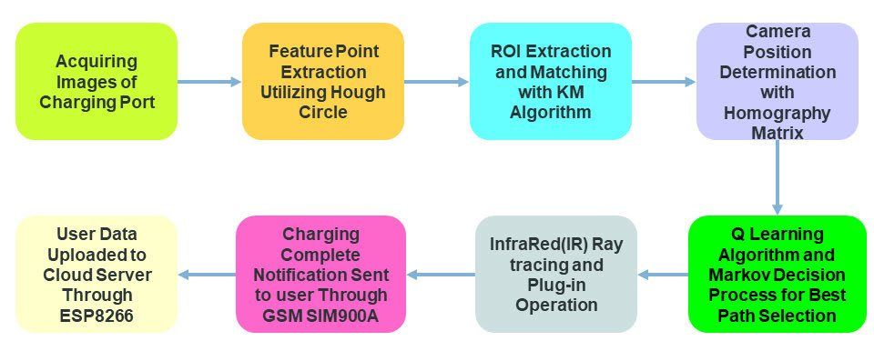
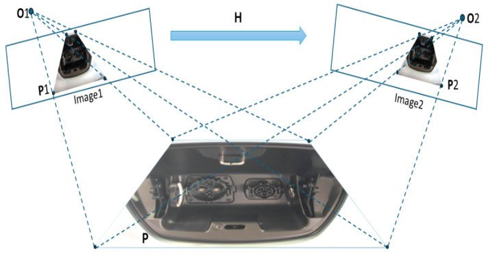
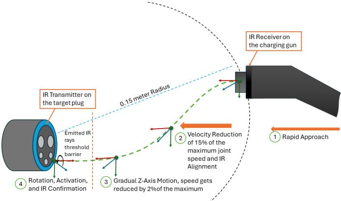
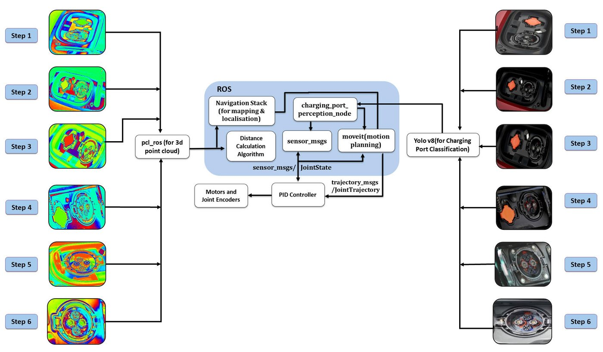
Dataset and trainingTeaching it the sockets
Over 2,000 images of EV sockets from Roboflow were annotated into seven classes: Type 1, Type 2, CCS1, CCS2, CHAdeMO, GB/T and Tesla Model S. To make the model hold up in real car parks, the data was augmented with zoom up to 20%, ±15° shear, ±25° hue, ±25% brightness, blur up to 2.5 px, noise on up to 5% of pixels and mosaic tiling.
The model was trained with Ultralytics YOLOv8.0.20 on an NVIDIA Tesla T4 GPU: 168 layers and about 11.1 million parameters.
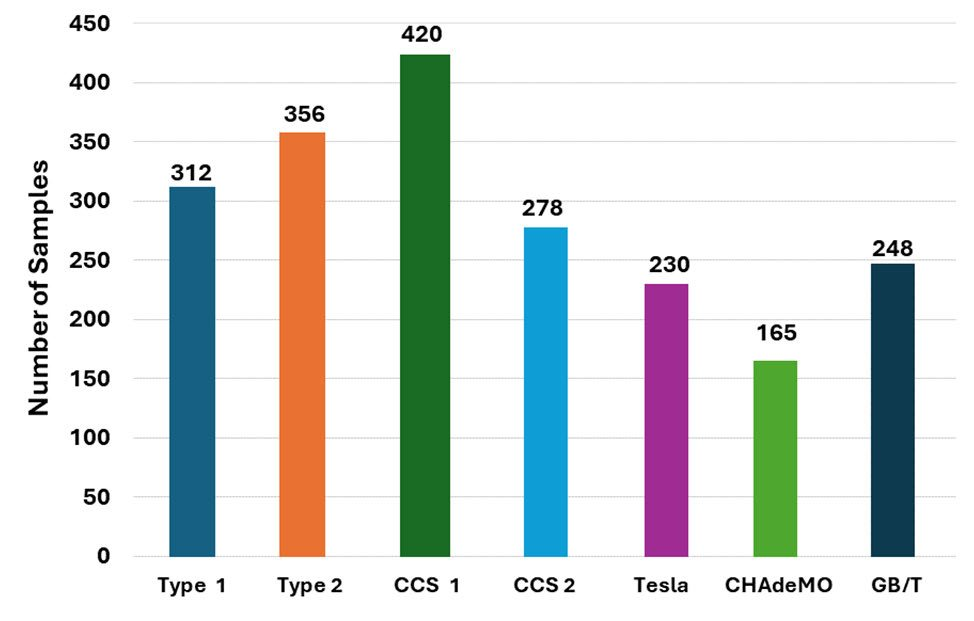
ResultsHow well it sees
mAP50 per class. Overall: precision 0.927, recall 0.947, mAP50 0.930, mAP50-95 0.545.
Speed per image: 0.4 ms preprocessing, 7.8 ms inference and about 1.0 ms for loss and post-processing, which is fast enough for real-time guidance on embedded hardware.
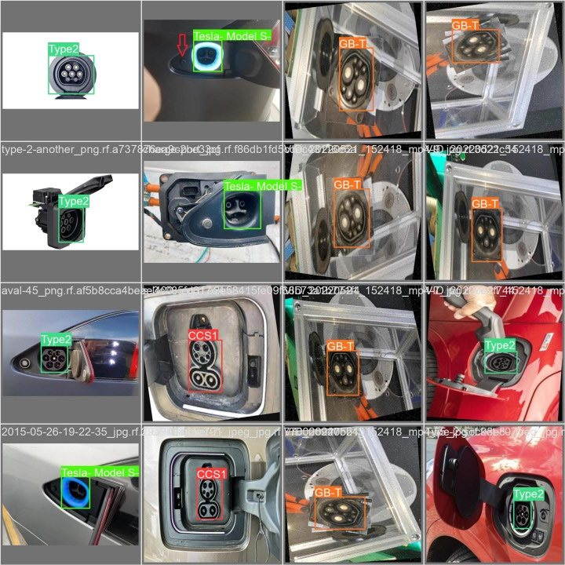
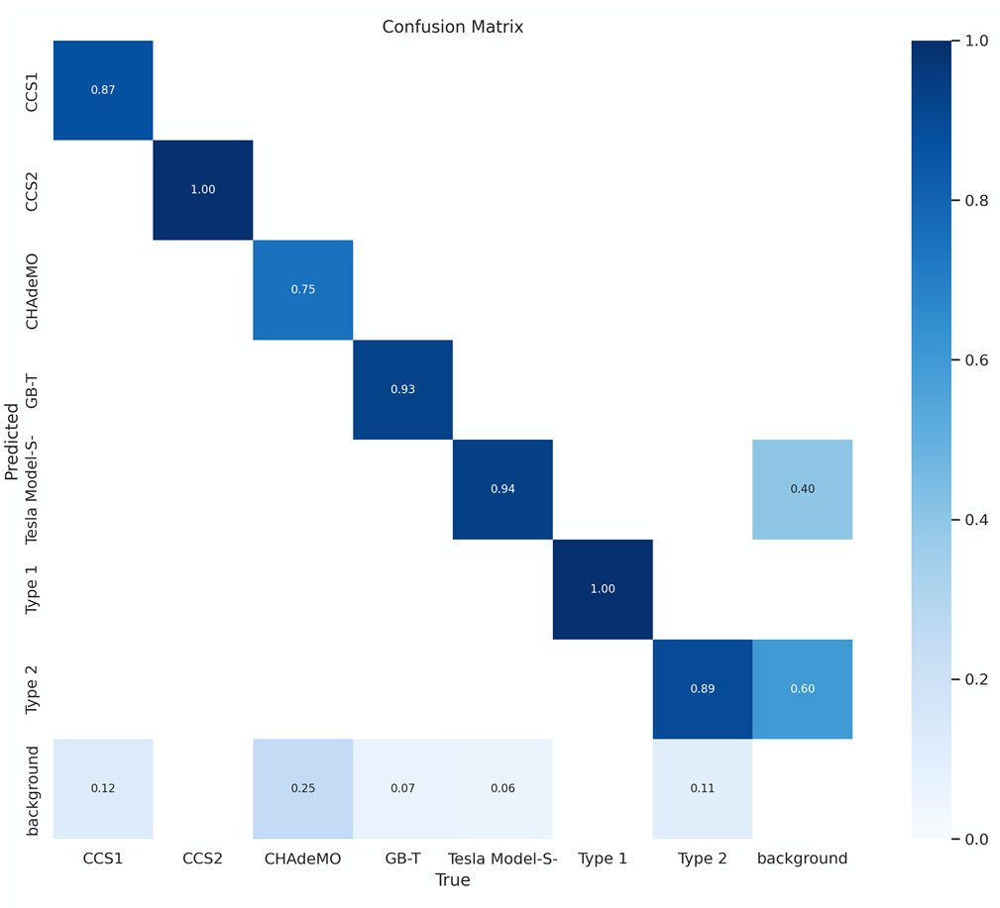
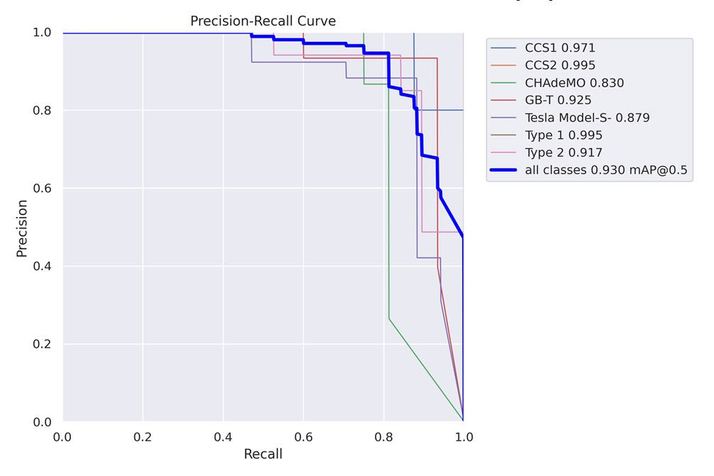
Charge notificationTelling the driver
An Arduino Uno tracks state of charge through a SOC indication module while a 12 V lead-acid test battery charges. The ESP8266 uploads the SOC to a web dashboard. When the LED turns from red to green at 100%, the Arduino has the SIM900A, a 900 MHz module with an SMA antenna, send an SMS so the owner knows the car is ready.
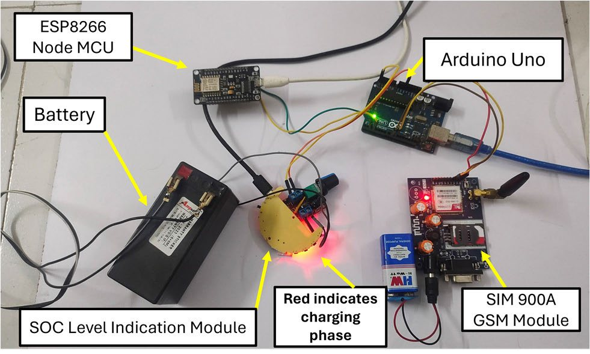
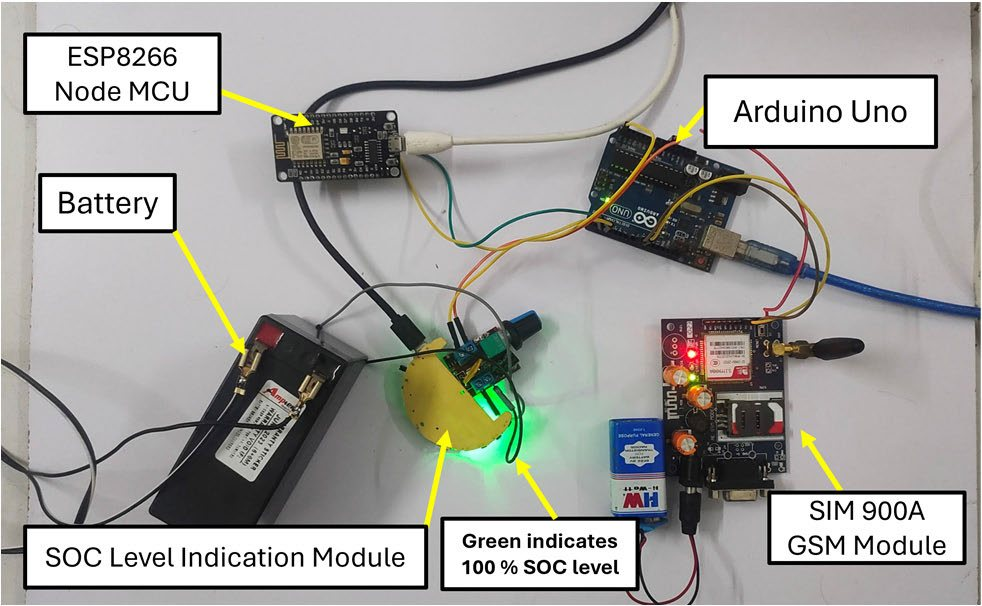
PublicationRead the full study
AViTRoN: Advanced Vision Track Routing and Navigation for Autonomous Charging of Electric Vehicles
V.C. Mahaadevan, R. Narayanamoorthi, Sayantan Panda, Sankhaddep Dutta, Gerard Dooly
IEEE Access, vol. 12, pp. 12402–12423, 2024 · open access · doi:10.1109/ACCESS.2024.3355018